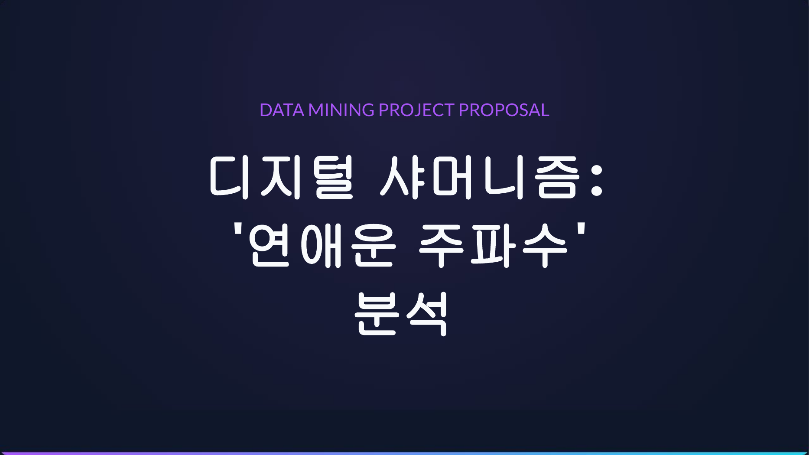
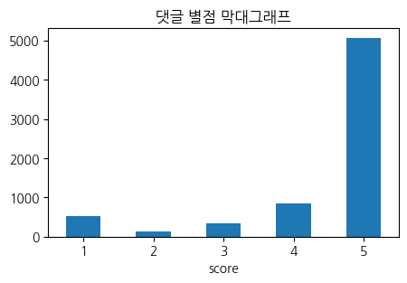
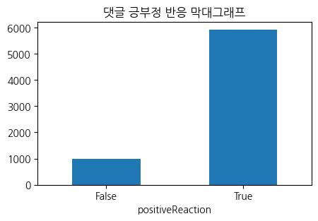
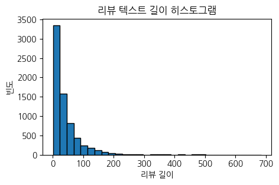
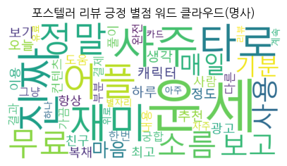
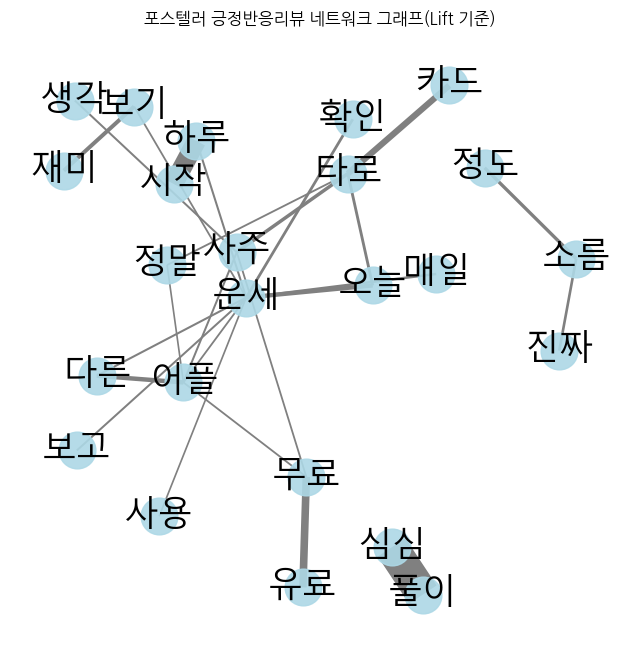
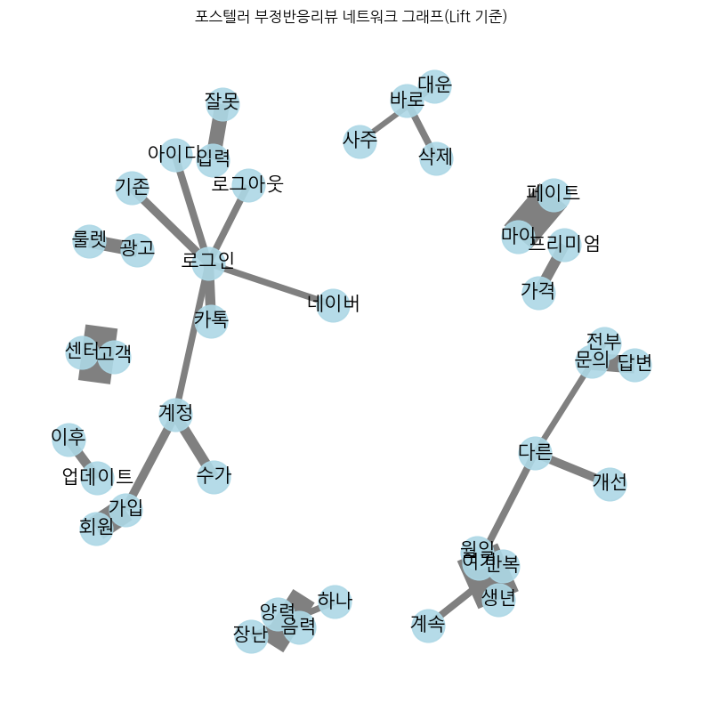
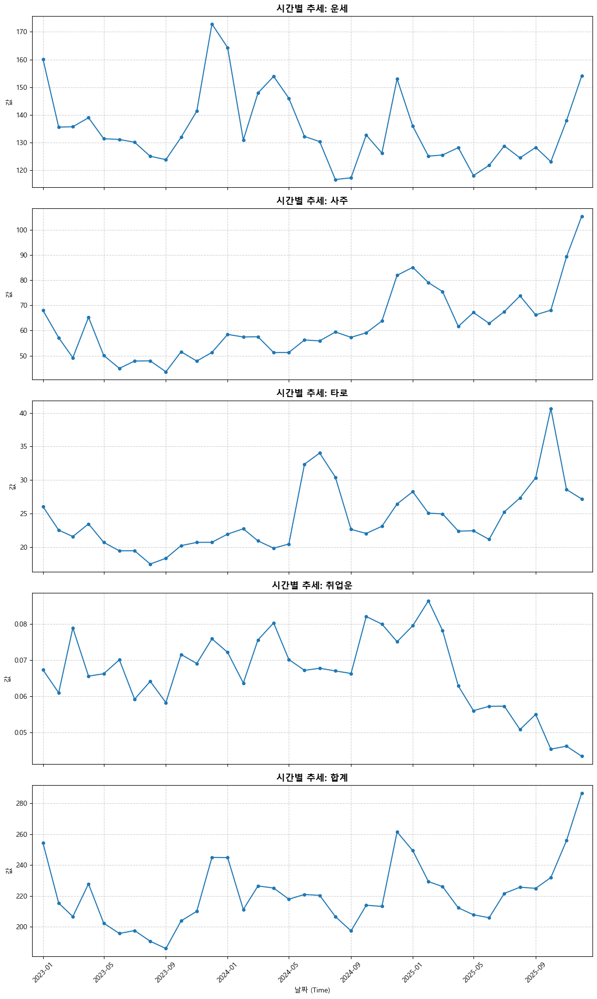
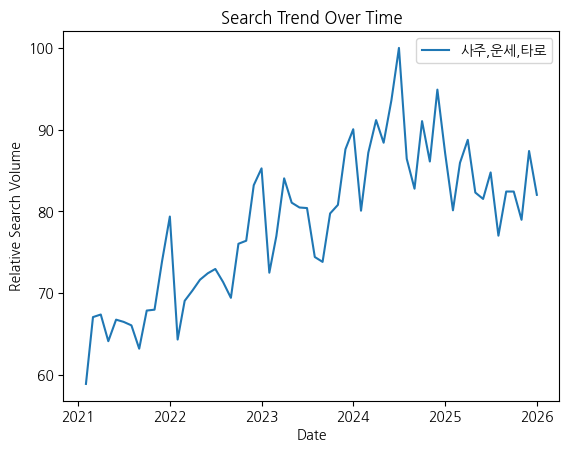

불안의 시대, 디지털 샤머니즘을
데이터로 들여다보다
사람들은 왜 스마트폰으로 사주·운세·타로를 볼까요? 이 질문에 답하기 위해 검색 트렌드, 운세 앱 리뷰, 사주 커뮤니티 게시글을 모아 분석했습니다. 결론을 먼저 말하면, 높은 앱 만족도와 꾸준한 검색 관심은 확인했지만 "불안해서 운세를 더 찾는다"는 인과관계는 이번 데이터로 증명하지 못했습니다. 이 페이지는 무엇을 확인했고, 무엇을 확인하지 못했는지를 구분해 정리했습니다.
프로젝트 배경과 문제의식
커지는 미래 불안
취업난, 고물가, 고금리가 이어지고 1인 가구가 늘면서, 기댈 곳이 마땅치 않은 청년이 많아졌습니다. "나는 어떤 사람이고 앞으로 어떻게 될까"를 알고 싶은 마음도 함께 커졌습니다.
점집에서 스마트폰으로
사주·운세는 이제 점집이 아니라 운세 앱(포스텔러, 점신), 유튜브 타로 영상, SNS에서 소비됩니다. 비싼 상담료나 방문 부담 없이 언제든 짧고 가볍게 볼 수 있는 콘텐츠가 되었습니다. 이 현상을 이 프로젝트에서는 '디지털 샤머니즘'이라고 부릅니다.
놀이가 된 무속 문화
넷플릭스 <케이팝 데몬 헌터스>, 예능 <신들린 연애>처럼 무속은 대중 콘텐츠의 소재가 되었습니다. MBTI처럼 결과를 친구와 공유하며 즐기는 놀이 문화로 받아들여지고 있습니다.

"사회가 불안해질수록 사람들은 운세를 더 찾고, 거기서 위안을 얻을까?"
미신이냐 아니냐를 따지기보다, 사람들이 실제로 남긴 데이터(검색 기록, 앱 리뷰, 커뮤니티 고민 글)를 보고 운세 콘텐츠가 어떤 맥락에서 소비되는지 살펴봤습니다. 다만 관찰 데이터만으로 원인과 결과를 단정하지 않고, 각 가설이 데이터로 어디까지 확인되는지를 구분했습니다.
세운 가설과 검증 결과
가설이 모두 맞았다고 포장하지 않고, 데이터가 말해 주는 만큼만 판정했습니다.
사회·경제적 불안이 커질 때 운세 검색이 늘어난다
검색 추이는 확보했지만, 같은 기간의 실업률·물가 같은 경제지표를 함께 분석하지 않아 둘 사이의 관계를 직접 확인할 수 없었습니다.
리뷰에 위로·불안 같은 감정 표현이 반복된다
'마음'(195건), '위로'(92건), '불안'(32건) 같은 표현은 실제로 있었습니다. 하지만 '재미'(699건), '소름'(266건), '정확'(249건)처럼 서비스 자체를 평가하는 표현이 훨씬 많아, 위안이 주된 이용 목적이라고 보기는 어려웠습니다.
네이버와 구글의 검색 흐름이 비슷하다
같은 36개월 구간에서 두 플랫폼의 상관계수가 운세 -0.001, 사주 -0.071, 타로 0.238로 거의 관계가 없었습니다. 플랫폼마다 이용자와 수치 계산 방식이 달라 단순 비교가 어렵다는 점을 확인했습니다.
데이터 수집부터 분석까지의 흐름
데이터 수집
- Selenium: 네이버 사주 카페 게시판 1~55페이지를 차례로 열어 제목·작성자·등록일·좋아요 수 816건 수집
- google-play-scraper: 포스텔러 리뷰 6,925건 수집 (2017.07~2026.02)
- 검색 트렌드: 네이버 데이터랩·구글 트렌드 월별 지수 내려받기
- 공공데이터: 전국사업체조사(2023)에서 '점술 및 유사 서비스업' 9,895곳 확인 (참고용)
정제
- 필요 없는 열 제거: 프로필 이미지, 앱 버전, 개발사 답변 등 6개 열
- 결측치 확인: 남은 5개 열 모두 빈 값 0건
- 특수문자 제거: 정규식으로 한글·영문·숫자·공백만 남김
- 날짜 보정: 당일 글의 시간 표기(예: 14:32)를 수집일 날짜로 변환
텍스트 분석
- 명사 추출: KoNLPy Okt로 두 글자 이상 명사만 추출
- 불용어 제거: 리뷰는 '포스텔러·스텔러·포스', 카페 제목은 '사주질문·질문·사주'
- 그룹 나누기: 별점 4~5점은 긍정, 1~3점은 비긍정
- 빈도 집계: Counter로 상위 50개 단어를 뽑아 워드클라우드 생성
연관 규칙 & 연결망
- 변환: 리뷰 1건 = 단어 묶음 1개로 보고 TransactionEncoder로 표 형태 변환
- Apriori: min_support=0.005, 두 단어 쌍까지(max_len=2)
- 규칙 정렬: lift 기준 상위 50개 규칙 선택
- NetworkX: lift를 선 굵기로 표현한 단어 연결망 그리기
| 데이터 | 기간 · 규모 | 활용 목적 |
|---|---|---|
| 네이버 데이터랩 (사주·운세·타로 묶음) | 2021.02~2026.01, 60개월 | 장기 검색 추이 확인 |
| 네이버 데이터랩 (키워드별) | 2023.01~2025.12, 36개월 | 운세·사주·타로·취업운 각각의 흐름 비교 |
| 구글 트렌드 | 2022.12~2025.12, 37개월 | 네이버와 같은 기간 비교 |
| 플레이스토어 포스텔러 리뷰 | 2017.07~2026.02, 6,925건 | 별점 분포, 리뷰 단어, 단어 연관성 분석 |
| 네이버 사주 카페 게시글 제목 | 2020.02~2026.02, 816건 | 이용자가 직접 쓴 고민 주제 파악 |
| 전국사업체조사 | 2023년 기준 | 점술업 규모 참고 (가설 판정에는 사용하지 않음) |
※ 검색 트렌드 값은 실제 검색 횟수가 아니라, 각 플랫폼이 기간 내 최댓값을 100으로 맞춘 상대 수치입니다.
# 1. 포스텔러 앱 리뷰 수집 (google-play-scraper)
from google_play_scraper import Sort, reviews_all
result = reviews_all(
"com.un7qi3.forceteller",
sleep_milliseconds=0, lang="ko", country="kr",
sort=Sort.MOST_RELEVANT,
)
df = pd.DataFrame(result) # 6,925건
# 2. 네이버 카페 1~55페이지 수집 (Selenium) - 1페이지만 셀렉터가 다름
for page in range(1, last_page + 1):
driver.get(f"https://cafe.naver.com/f-e/cafes/25615725/menus/530?page={page}")
time.sleep(2)
if page == 1:
row_selector = "#cafe_content > div.article-board > table > tbody:nth-child(5) > tr"
else:
row_selector = "#cafe_content > div.article-board > table > tbody > tr"
rows = driver.find_elements(By.CSS_SELECTOR, row_selector)
# 3. 당일 글의 시간 표기('14:32')를 수집일 날짜로 바꾸기
def fix_enroll_date(date_val):
if ":" in str(date_val):
return today_str # 예: '2026.02.04.'
return date_val
# 4. 명사 추출 (Okt) - 두 글자 이상, 불용어 제외
result = okt.pos(re.sub("[^0-9a-zA-Z가-힣\\s]", "", sent))
words = [w for w, p in result if p == "Noun" and len(w) > 1 and w not in stopwords]리뷰·게시글 탐색과 단어 분석
포스텔러 리뷰 별점 분포 (6,925건)
5점에 크게 몰리고, 1점이 2~3점보다 많은 J자 모양
노트북에서 그린 원본 그래프
pandas / Matplotlib 출력 결과



그룹별 워드클라우드 비교 (명사 상위 50개)
별점 그룹과 카페 고민 글에서 자주 나온 단어를 비교합니다. 글자가 클수록 자주 등장한 단어입니다.

"재미있고, 소름 돋게 잘 맞고, 매일 본다"
운세·사주·타로 같은 서비스 이름 외에 '재미', '진짜', '소름', '무료', '매일', '기분', '마음', '하루'가 눈에 띕니다. 사람들은 주로 재미와 적중감을 이야기했고, '매일'·'하루'처럼 일상적으로 습관처럼 확인한다는 표현도 함께 나타났습니다.
함께 쓰이는 단어 찾기 (Apriori 연관 규칙)
단어가 몇 번 나왔는지만 세면 "어떤 단어가 같이 쓰이는지"는 알 수 없습니다. 그래서 리뷰 한 건을 단어 묶음 하나로 보고, Apriori 알고리즘(mlxtend)으로 자주 함께 등장하는 단어 쌍을 찾았습니다.
전체 리뷰 중 두 단어가 함께 나온 리뷰의 비율
A가 나온 리뷰 중 B도 함께 나온 비율
우연히 함께 나올 때보다 몇 배 더 자주 함께 나오는지. 1보다 클수록 관련이 깊음
| 그룹 | A (먼저 나온 단어) | B (함께 나온 단어) | 지지도 | 신뢰도 | 향상도 | 해석 |
|---|---|---|---|---|---|---|
| 비긍정 | {가격} | {프리미엄} | 0.0050 | 0.625 | 17.34 | '가격'을 말한 리뷰의 62.5%가 '프리미엄'(유료 상품)도 언급 → 유료 콘텐츠 가격에 대한 불만 |
| 비긍정 | {계정} | {가입} | 0.0060 | 0.261 | 13.72 | 계정·회원가입 관련 불편이 함께 언급됨 |
| 비긍정 | {로그인} | {계정} | 0.0130 | 0.245 | 10.65 | 로그인 문제가 계정 문제로 이어진다는 불만 (비긍정 연결망의 중심 단어) |
| 긍정 | {심심} | {풀이} | 0.0079 | 0.959 | 47.77 | '심심풀이'라는 한 단어가 형태소 분석에서 둘로 나뉜 것. 가볍게 즐기는 용도라는 표현 |
| 긍정 | {하루} | {시작} | 0.0078 | 0.336 | 27.64 | "하루를 운세로 시작한다"는 표현이 반복됨 → 일상 습관으로 사용 |
| 긍정 | {기분} | {운세} | 0.0054 | 0.174 | 1.49 | 향상도가 1에 가까워 관련성이 약함. '운세'가 원래 많이 나오는 단어라 함께 잡힌 것에 가까움 |
※ 기준: min_support=0.005, max_len=2, lift ≥ 1. 긍정 리뷰에서 98개, 비긍정 리뷰에서 508개 규칙이 나왔습니다. 향상도가 높은 쌍 중에는 '심심풀이', '마이페이트북'(앱 기능 이름)처럼 원래 한 단어가 나뉜 경우도 있어 원문을 함께 확인했습니다.
긍정 리뷰 단어 연결망
lift 상위 50개 규칙
읽는 법: 선이 굵을수록 함께 쓰이는 정도(lift)가 강합니다. 가운데의 '운세'와 '사주'가 '오늘·매일', '어플', '타로' 등 여러 단어와 연결되는 중심 역할을 합니다. 따로 떨어진 '심심-풀이', '유료-무료', '카드-타로', '소름-정도-진짜'는 "소름 돋을 정도로 잘 맞는다" 같은 관용 표현에서 나온 쌍입니다.
비긍정 리뷰 단어 연결망
중심 단어: 로그인
읽는 법: 가장 큰 덩어리는 '로그인'을 중심으로 '계정·카톡·네이버·아이디·가입'이 모인 로그인 문제입니다. 그 밖에 '고객-센터'·'문의-답변'(고객 응대), '생년-월일'·'음력-양력'(생일 입력 오류), '광고-룰렛'(광고 보상), '가격-프리미엄'(유료 가격) 이 각각 작은 덩어리를 이룹니다. 불만이 운세 내용보다 앱 이용 과정에 집중되어 있음을 보여 줍니다.
검색 트렌드 분석
네이버 '사주·운세·타로' 검색 추이 (2021.02 ~ 2026.01, 60개월)
실제 데이터랩 값 · 기간 내 최댓값 = 100 · 큰 점은 1월(연초) 값
2021년 58.9에서 시작해 2024년 7월 최고치 100을 찍었고, 이후에도 77~95 사이를 유지했습니다.
2022년 1월 79.4, 2023년 1월 85.3, 2024년 1월 90.0처럼 매년 12~1월에 오르는 패턴이 보였습니다. 신년운세 수요로 보입니다.
최고치는 연초가 아닌 2024년 7월이었습니다. 경제지표와 함께 분석하지 않았기 때문에 "불안 때문에 늘었다"고 말할 수는 없습니다.
키워드별 추이 (네이버 + 구글 합산, 36개월)
초기 분석
처음에는 네이버와 구글 값을 월별로 그대로 더해 추이를 그렸습니다. 그런데 두 값은 기준이 서로 다른 상대 수치라 더하는 것 자체가 맞지 않는다는 점을 뒤늦게 알게 되었고, 이 그래프는 결론의 근거로 쓰지 않았습니다. (시행착오 04 참고)

네이버와 구글, 같은 흐름일까?
2023.01~2025.12 공통 36개월, 키워드별 피어슨 상관계수
| 키워드 | 상관계수 | 해석 |
|---|---|---|
| 운세 | -0.001 | 관계 거의 없음 |
| 사주 | -0.071 | 관계 거의 없음 |
| 타로 | 0.238 | 약한 양의 관계 |
| 취업운 | 계산 불가 | 구글 값이 전 기간 0 |
상관계수가 0에 가까워 "어느 플랫폼에서든 같은 관심 흐름이 나타난다"는 가설(H3)은 지지되지 않았습니다. 플랫폼마다 이용자층과 수치를 계산하는 방식이 다르기 때문으로 보입니다.
취업운은 네이버에서 0.04~0.09 수준으로 매우 낮았고 구글은 전부 0이었습니다. 0은 "관심이 없다"가 아니라 "집계 기준보다 적다"는 뜻일 수 있어, 취업 시즌과의 관계는 판단하지 않았습니다.
결론: 확인한 것과 확인하지 못한 것
데이터로 확인한 것
-
높은 만족도: 리뷰의 85.6%가 4~5점, 평균 4.42점입니다. 이용자 대부분은 재미와 적중감을 이유로 만족했습니다.
-
일상 속 습관: '하루-시작', '오늘·매일-운세' 같은 연결이 나타나, 운세를 매일 확인하는 습관처럼 쓰는 모습이 보였습니다.
-
불만은 결제·로그인: 비긍정 리뷰의 핵심은 운세 내용이 아니라 유료 전환, 가격, 로그인·계정 문제였습니다.
-
고민 주제: 커뮤니티에서는 합격·취업·이직 같은 진로 고민과 궁합·연애·결혼 같은 관계 고민이 많았습니다.
확인하지 못한 것 (한계)
-
불안 → 운세 검색 증가: 경제지표를 결합하지 않아 인과관계는 물론 상관관계도 확인하지 못했습니다.
-
위안이 주된 이용 목적: 감정 표현은 있었지만 '재미'·'정확' 같은 평가 표현보다 훨씬 적었습니다.
-
별점 = 감정은 아님: 별점으로 긍정/비긍정을 나눴을 뿐, 리뷰 문장의 실제 감정을 판별한 것은 아닙니다.
-
제목만 수집: 카페는 제목만 모았고, 광고성 글도 일부 섞여 있어 본문 기반 분석이 필요합니다.
리뷰 분석 결과로 본 서비스 개선 제안
'가격-프리미엄'(lift 17.34)과 1점 리뷰의 '무료→유료' 불만을 근거로, 무료·유료 범위와 가격을 미리 분명히 안내하고 작은 단위 결제를 제공하는 방안.
비긍정 연결망의 중심이 '로그인'이었던 만큼, 업데이트 후 로그인 유지와 소셜 계정(카카오·네이버) 연동 오류를 우선 점검.
'생년-월일', '음력-양력', '잘못-입력', '광고-룰렛' 쌍이 반복된 만큼, 생년월일 입력 확인 단계와 광고 시청 보상 지급 오류를 개선.
다음에 보완할 점
- 실업률·물가·소비자심리지수 같은 월별 지표를 결합해, 시차를 두고 검색량과의 관계를 분석 (H1 검증)
- 네이버·구글 데이터를 각각 표준화한 뒤 더하지 않고 변화율·상관관계로 비교
- 별점과 별개로 한국어 감성 분석 모델이나 직접 라벨링한 표본으로 리뷰 감정을 판별
- '심심풀이'처럼 쪼개지는 단어를 막기 위해 사용자 사전을 지원하는 형태소 분석기(Kiwi 등) 적용
- 수집·정제·분석 노트북을 나눠 셀 실행 순서에 의존하지 않는 구조로 정리
시행착오와 해결 과정
실제 노트북 코드에 흔적이 남아 있는 문제와, 그 과정에서 배운 점입니다.
[웹 크롤링] 1페이지는 되는데 2페이지부터 글을 못 찾은 문제
1페이지에서 찾은 게시글 목록 셀렉터(tbody:nth-child(5) > tr)를 그대로 55페이지 반복문에 사용.
1페이지는 정상 수집됐지만 2페이지부터는 게시글 행을 찾지 못함.
개발자 도구로 확인해 보니 1페이지에만 공지사항 영역이 있어서 게시글 목록 위치가 달랐고, 2페이지부터는 일반 tbody > tr 구조였음.
페이지 번호에 따라 셀렉터를 나누는 분기(if page == 1: ... else: ...)를 넣어 55페이지, 816건을 수집.
남은 개선점: 페이지를 열 때마다 time.sleep(2)로 무조건 2초를 기다립니다.
네트워크가 느리면 요소를 놓칠 수 있으므로 WebDriverWait로 "요소가 나타날 때까지 기다리기"와 실패 시 재시도를 넣는 것이 다음 과제입니다.
[수집 도구] 리뷰를 브라우저 스크롤로 모으던 방식에서 전용 라이브러리로
수집 노트북에는 플레이스토어에서 리뷰 창을 열고 Keys.END로 스크롤을 반복해 리뷰를 불러오는 Selenium 코드가 주석으로 남아 있습니다.
이 방식은 스크롤할 때마다 기다려야 해서 수천 건을 모으기에는 느리고, 화면 구조가 바뀌면 셀렉터가 쉽게 깨집니다.
👉 해결: 플레이스토어 리뷰는 google-play-scraper의 reviews_all()로 바꿔 6,925건을 한 번에 가져오고,
Selenium은 전용 도구가 없는 네이버 카페 수집에만 사용했습니다.
"익숙한 도구"보다 "대상에 맞는 도구"를 고르는 것이 수집 시간과 안정성을 좌우한다는 점을 배웠습니다.
[연관 규칙] 자주 나오는 단어만 상위에 올라오는 문제
"A가 나오면 B도 나올 확률"인 신뢰도(confidence)가 높은 규칙을 의미 있는 규칙으로 보려 함.
'운세'·'사주'처럼 원래 자주 나오는 단어가 결론(B)인 규칙이 신뢰도만으로는 높게 나와, 새로운 정보가 없는 규칙이 섞임.
신뢰도는 B 자체가 얼마나 흔한지를 고려하지 않음. 예: '기분→운세'는 신뢰도 17%지만 lift는 1.49로, 거의 우연 수준.
B의 흔한 정도를 보정한 lift를 기준으로 규칙을 고르고 정렬(metric="lift"). 그 결과 '가격-프리미엄'(17.34), '로그인-계정'(10.65) 같은 불만 포인트가 드러남.
배운 점: lift가 높아도 '심심-풀이'처럼 형태소 분석이 단어를 쪼갠 결과일 수 있어, 숫자만 믿지 않고 원문 리뷰를 함께 확인해야 했습니다. 또 결과는 min_support 같은 기준값에 따라 달라지므로, 기준값을 함께 밝혀야 다른 사람이 재현할 수 있습니다.
[검색 트렌드] 네이버와 구글 값을 그냥 더해 버린 문제
두 플랫폼의 관심도를 합쳐 보려고 날짜를 기준으로 네이버 표와 구글 표를 그대로 더함(naver + google).
합산 그래프는 그럴듯해 보였지만, 키워드마다 어느 플랫폼 값이 더 크냐에 따라 모양이 좌우됨. 구글 시작월(2022.12)은 네이버에 없어 빈 값이 됨.
두 값 모두 0~100이지만 각자 자기 최댓값을 100으로 맞춘 상대 수치라 단위가 다름. 더하거나 크기를 비교할 수 없는 값이었음.
공통 36개월로 맞춘 뒤 값의 크기 대신 흐름이 비슷한지를 상관계수로 다시 확인. 결과적으로 "두 플랫폼 흐름이 같다"는 가설은 기각.
배운 점: 숫자의 범위가 같아 보여도 "이 숫자가 어떻게 만들어졌는지"를 먼저 확인해야 합니다. 상관계수 확인은 포트폴리오를 정리하면서 추가로 진행했습니다.
[감성 분류] 라벨이 없어 별점을 대신 쓴 선택과 그 한계
감성 분석 모델을 학습시킬 정답 라벨이 없어서, 별점 4~5점을 '긍정', 1~3점을 '비긍정'으로 나눠 단어를 비교했습니다. 빠르게 탐색을 시작하기에는 충분했지만, 실제로 리뷰를 읽어 보니 별점은 4점인데 본문은 유료 결제나 광고 오류에 대한 불만인 리뷰도 있었습니다. 별점과 글의 감정이 항상 일치하지는 않았습니다.
👉 대응: 결과를 설명할 때 "별점 기반 분류는 감정 판별 결과가 아니다"라는 단서를 항상 붙였고, 3점을 비긍정에 넣은 기준도 함께 밝혔습니다. 다음 단계로 감성 분석 모델이나 직접 라벨링한 표본으로 검증할 계획입니다.
사용한 기술
uv(pyproject.toml + uv.lock)로 팀원 모두 같은 패키지 버전을 쓰도록 고정했습니다.
좋은 분석은 가설을 멋지게 증명하는 일이 아니라, 데이터가 말할 수 있는 범위를 정확히 구분하는 일이라는 것을 배웠습니다.